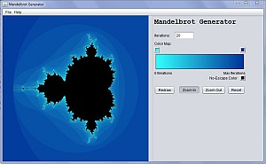

Mandelbrot Generator v1.0

What is the Mandelbrot Set?
The Mandelbrot set is a mathematical set of points whose boundary is a distinctive and easily recognizable two-dimensional fractal shape. The set is closely related to Julia sets (which include similarly complex shapes), and is named after the mathematician Benoît Mandelbrot, who studied and popularized it.
What does this program do?
This program draws the Mandelbrot Set according to it's assigned color map. It allows you to zoom in on the image and change the colors with which it has been drawn. You can also choose the precision of the drawing as required.
Increasing the Precision
The colors of the graph are determined by the number of iterations it takes before the program realizes that point is in the set. The closer a point is to the set, the more iterations it takes to determine if it is in the set. In fact, it takes an infinite number of iterations to prove that a point is in the set.
In order to complete the drawing in a reasonable time, we can choose a maximum number of iterations to try. Any points that require more are considered to be in the set. You can change this value, and thus the precision of the drawing by editing the "Iterations" field and pressing redraw.
Zooming
You can zoom in to or out of the image to examine it in more detail. Once you select which direction to go, you simply click on a point on the graph to zoom in to it. Note: You may need to increase the number of iterations in order to see more detail.
Colors
You can change the colors of the drawing by clicking their color swatches on the Color Map section. You can also save your current color map or load a new one using the options provided in the file menu.
Exporting
You can export your drawing at any resolution using the export function provided in the file menu. Note: For larger images, you may need to increase the maximum number of iterations to ensure an acceptable amount of detail.